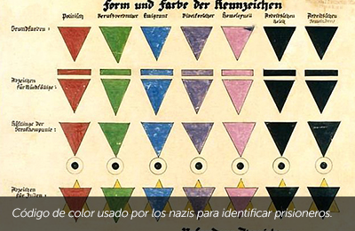
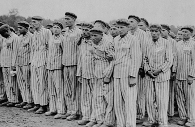
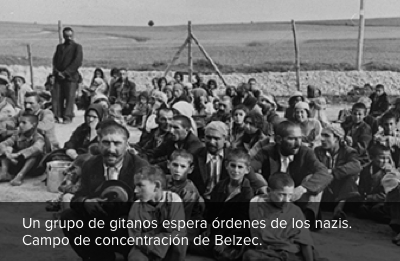

Un objetivo central de la ideología nazi era lograr una sociedad
alemana uniforme sin otro mensaje que el hitlerista, sin otra ideología
que la nazi y sin otra "raza" que la aria. Esto implicaba: la matanza de los judíos por ser “una anti-raza y el mayor enemigo
de Alemania”, la matanza de enfermos mentales por ser “una carga y un peligro para la pureza
racial”, la matanza de los gitanos por ser considerados “una raza inferior”, la matanza de
homosexuales por “poner en peligro la natalidad alemana”, la matanza de Testigos de Jehová
por “no reconocer una autoridad superior a la de Dios” y la matanza de intelectuales por “ser
peligrosos para la mente”.

Personas con discapacidades físicas o mentales
La propaganda nazi persiguió a individuos con discapacidades físicas o mentales. Fueron capturados, escondidos y aislados como si fueran miembros de otra especie. Antes de 1937 cerca de 200.000 personas con estas características fueron esterilizadas. Médicos alemanes asesinaron pacientes discapacitados en toda Alemania en una operación que se llamó “T4” o “Eutanasia”.
Homosexuales
Los nazis empezaron a perseguir a los homosexuales inmediatamente
después de haber accedido al poder, declarando que cometían el delito de degeneración. Los nazis creían que ellos ponían en peligro la natalidad alemana y la salud física y espiritual del pueblo. Los homosexuales fueron internados en campos de concentración, donde se los obligaba a llevar un triángulo rosado. También fueron torturados, castrados y víctimas de experimentos. Se estima que entre 5.000 y 15.000 homosexuales fueron asesinados por ese motivo.

Gitanos
Cuando Hitler tomó el poder, en Alemania vivían alrededor de 30.000 gitanos. Los nazis los declararon una amenaza de la que había que defenderse. Primero en Alemania y luego en toda Europa ocupada, los gitanos fueron perseguidos, capturados y asesinados en campos de exterminio. Se estima que más de 250.000 gitanos fueron exterminados por los nazis. Los gitanos llaman al genocidio “Porajmos” o “gran destrucción”.

Testigos de Jehová
Los Testigos de Jehová fueron víctimas de una intensa persecución
bajo el régimen nazi ya que se oponían a la guerra y a obedecer las reglas de un gobierno autoritario. Por ejemplo, se negaban a realizar el saludo nazi, a formar parte de las organizaciones del partido y a cumplir el servicio militar. Entre los años 1933 y 1945 los nazis encarcelaron a más de 10.000 Testigos de Jehová. Cerca de la mitad de ellos murieron en campos de concentración.
Judíos
El nazismo predicaba que los judíos eran los culpables
de todos los males de Alemania. Utilizando una invasiva propaganda
y un gran adoctrinamiento, los nazis describían al judío como una “anti-raza” que estaba contaminando la pureza de la raza aria alemana. El nazismo propuso entonces purificar a Alemania de los judíos y sus influencias y más adelante, con la conquista de Europa, eliminarlos de todos y cada uno de los países ocupados.